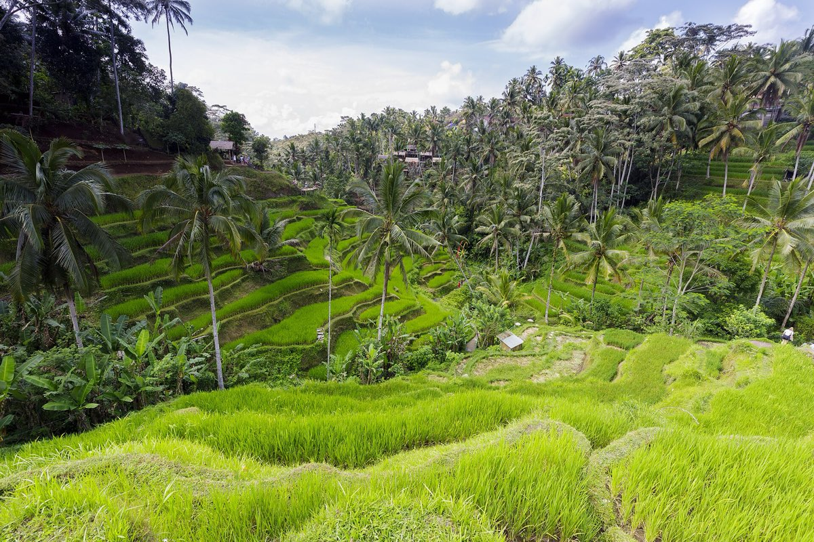

點地圖上的點看照片，卡片上的「地圖」會飛過去。價位：$ 一人 IDR 100k 內、$$ 100k 到 400k、$$$ 400k 以上；餐廳只留人均 IDR 260k（約 TWD 500）內。☔ 是室內或有遮蔽的地方。
來源都是 2024 到 2026 年的文章，座標用 Google Maps 核對過；照片取自各店在 Google Maps 上的首圖，店家會搬會關，出發前再看一眼營業狀態。底圖海岸線與主要道路來自 OpenStreetMap（ODbL）。